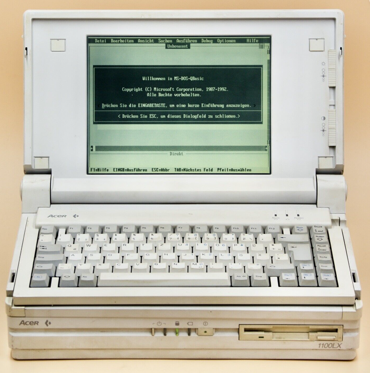
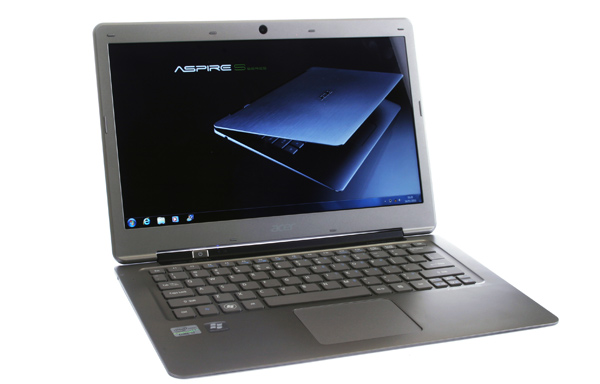
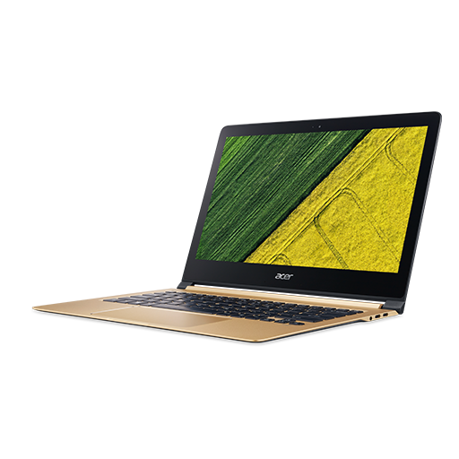

Istória Marka
Acer
Explore Beyond Limits
Vizaun Jeral
Evolusaun laptop Acer husi tempu ba tempu muda boot. Iha uluk, Acer fokus liu ba laptop barato no simples ba estudante no escritório. Agora, Acer iha linha premium, gaming, AI, no ultrabook moderno. Husi "Multitech" iha tinan 1976 to'o marka global ho Aspire, Swift, Predator, no Nitro — Acer sai kompania PC boot liu iha mundu ho presença iha segmentu hotu.
Liña Tempu
Harii ho naran "Multitech" iha Taiwan
Kompania harii ho naran "Multitech" iha Taiwan husi Stan Shih no nia parseiru sira. Hahú hanesan kompania distribuisaun no dezain elektronika simples.
Notebook Dahuluk Acer
Acer lança nia notebook dahuluk ba merkadu. Pasu importante ida hosi kompania ne'ebé uluk fokus ba hardware simples, agora entra iha industria laptop.

Aspire populariza laptop barato
Série Aspire populariza laptop barato ba konsumidór sira iha mundu tomak. Estratéjia presu asequível halo Acer sai bestseller iha merkadu estudante no escritório.
Aspire One Netbook — Ba Estudante
Acer lança Aspire One netbook, ki'ik no barato ba estudante. Iha era mesmu Eee PC ASUS, Acer kompete forte iha kategoria netbook asequível.

Série Timeline — Bateria Naruk
Série Timeline fó bateria naruk no design finu ba utilizadór sira ne'ebé presiza laptop leve no duraduru ba viajen no traballu.
Aspire S3 — Ultrabook Moderno
Acer estreia ultrabook Aspire S3, moderno no leve. Ida husi laptop ultrabook sertifikadu Intel dahuluk — resposta ba MacBook Air ho presu asequível.

Predator no Nitro — Gaming Forte
Linha gaming Predator no Nitro sai forte ba gamer sira. Predator ba high-end, Nitro ba segmentu médiu — Acer kompete diretu ho ROG no MSI iha gaming laptop.
Swift 7 — Laptop Finu Liu iha Mundu
Swift 7 sai hanesan laptop finu liu iha mundu iha tinan 2018. Rekordu ida ne'ebé hatudu Acer labele deit kompete ba presu maibé mos ba inovasaun dezain.

AI, OLED, no Prosesadór Moderno
Acer integra AI, OLED screen, no prosesadór moderno iha Swift, Nitro, no Predator. Linha Swift Edge liuliu lidera segmentu ultrabook AMD Ryzen AI ho rekordu laptop finu liu.
Mudansa Design
- Laptop boot no todan
- Plastik simples
- Bateria la dura kleur
- Performance básiku
- Tela LCD kualidade médiu
- Fino no leve
- Tela OLED/IPS alta kualidade
- SSD rápidu
- Gaming RGB iha Predator/Nitro
- AI features (NPU)
- Bateria naruk
Linha importante

Aspire
Uzu normal ba estudante no escritório. Presu asequível, performance di'ak ba loron-loron.

Swift
Premium, fino, bateria di'ak. Ba profisionál ne'ebé presiza portabilidade aas no performance di'ak.

Nitro
Gaming médiu ho presu di'ak. Equilibra performance ho presu ba gamer sira iha orsamentu limitadu.

Predator
Gaming high-end. GPU poderoza, display alta taxa de atualização, cooling avansadu ba gamer sério.

TravelMate
Ba negósiu no escritório. Durabilidade, seguransa, no kompatibilidade empresariál.
Foku Atual
Iha komunidade online, utilizadór barak gosta Acer tanba presu asequível no performance di'ak. Linha premium hanesan Swift no Predator geralmente iha kualidade aas liu. Ohin loron, Acer investe boot iha AI PC hardware, adopsaun OLED iha liña hotu, no sustentabilidade. Swift Edge hetan rekord ba laptop OLED finu liu iha mundo — hatudu Acer nia kompromisu ba inovasaun kontinua no produtu ho kualidade.